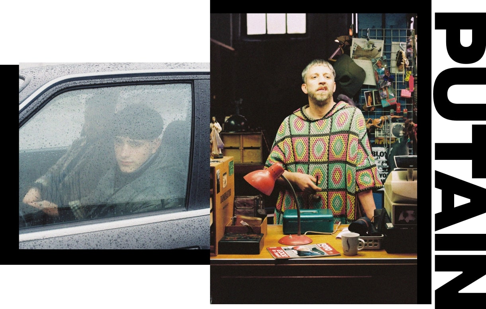
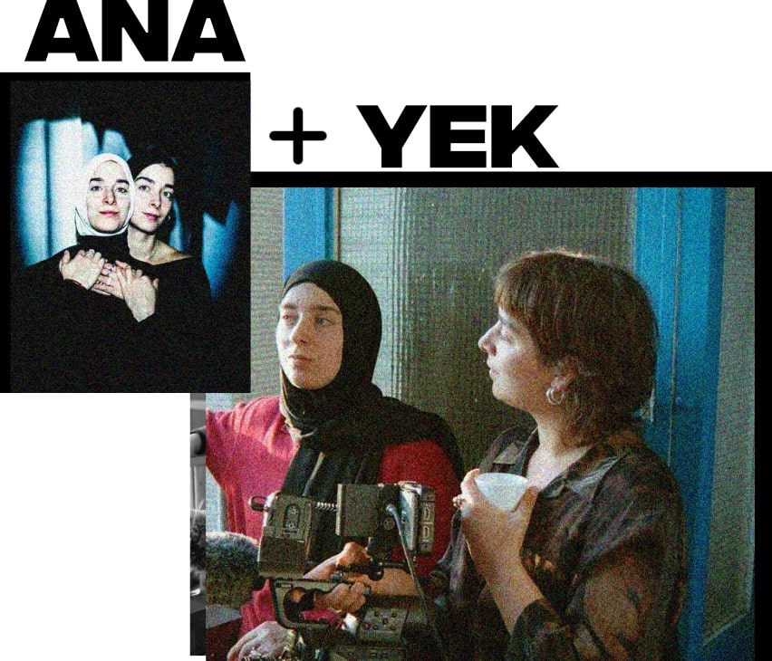

At GIGI Films, we work with real people — no acting experience, just raw
presence and honest energy. On this page, you’ll find a selection of the
films, video projects, and campaigns we’ve cast. Each project reflects our
belief that great stories begin with real faces, real voices, and genuine
connection. We look beyond the obvious — and find talent where others
might not. Here, you can explore some of the work we’ve helped bring to
life. Each project carries its own rhythm, shaped by the people in front
of the camera. Whether it's a quiet moment or a loud one, what you see is
always real — because that's what we stand for.
Putain is a Belgian drama series that follows the life of Gigi, a
teenager growing up in Brussels amidst layered family dynamics and
social realities. Raw, bold, and unfiltered, the series explores what it
means to come of age in a city full of contradictions. Blending humor,
absurdity, and deep emotional insight, Putain paints a vivid picture of
youth navigating identity, pressure, and belonging. The multilingual
narrative — weaving Dutch, French, Arabic, and Lingala — adds
authenticity and reflects the vibrant, fractured spirit of Brussels
itself. More than a coming-of-age story, Putain is a sharp, intimate,
and unapologetically honest portrait of urban adolescence.

a series by Deben Van Dam written by Gorik van Oudheusden, Frederik
Daem, Deben Van Dam, Nadège Bibo-Tansia with Liam Jacmin, Felix
Heremans, Hind, Victoria Djamusala, Laura Darnovsky, Pierre Boeraeve
produced by Kristoffel Mertens, Panenka

Skiff is a Belgian coming-of-age feature film directed by Cecilia
Verheyden. The story centers on Malou, a 15-year-old girl who stands
out in the world of competitive rowing, yet finds herself adrift when
it comes to the complexities of home, identity, and belonging.
Set against a quiet but emotionally charged backdrop, Skiff captures
the inner tensions of adolescence with nuance and tenderness. As Malou
navigates shifting relationships and unexpected emotions, the film
explores how moments of confusion can become turning points of growth.
With restrained visuals and a strong emotional undercurrent, Skiff
offers an intimate, layered portrait of a girl on the edge of change —
both in sport and in life.
a film by Cecilia Verheyden with Lina Miftah written by Cecilia
Verheyden, Vincent Vanneste produced by Elisa Heene, Mirage films
Ana + Yek (Me + You) follows twin sisters Sanaa and Zohra. What begins
as Zohra’s exploration of their Moroccan heritage gradually reveals
the shifting dynamics of their relationship, as Sanaa’s deepening love
for Islam becomes more apparent. The film unfolds as a journey of
mutual understanding — a cinematic dialogue fueled by their desire to
connect. An intimate portrait of sisterly love and independence.

a documentary film by Zohra Benhammou & Romy Mana edited by Febe Simoens
sound by Sabrina Calmels & Aline Gavroy produced by Elisa Heene
distributed by Screenbox in cooperation with Cinemaximiliaan Belgian
release with the support of Darna